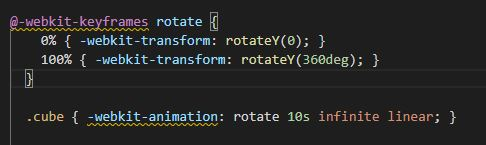

This week I chose to research how to create 3D graphics using CSS and HTML. There are many other ways to make 3D graphics and each of them has their advantages and disadvantages. Some advantages of CSS are that it does not have the need for images and is able to hook directly into the GPU for graphic acceleration. It also does not require plug-ins. A disadvantage is that there is inconsistency in display from browser to browser.
On this page there is a rotating 3D box that I created. This uses CSS transitions in order to move the image smoothly and effectively. Different browsers support different levels of transitions. Because of this I used the prefix -webkit because this is what is used in Google Chrome(the browser I typically use). However, I also added the standard declaration, in order to take care of other browsers as well.
Here is code that makes the box turn:
Resources:
https://www.creativebloq.com/3d/how-create-impressive-3d-graphics-css3-21410672